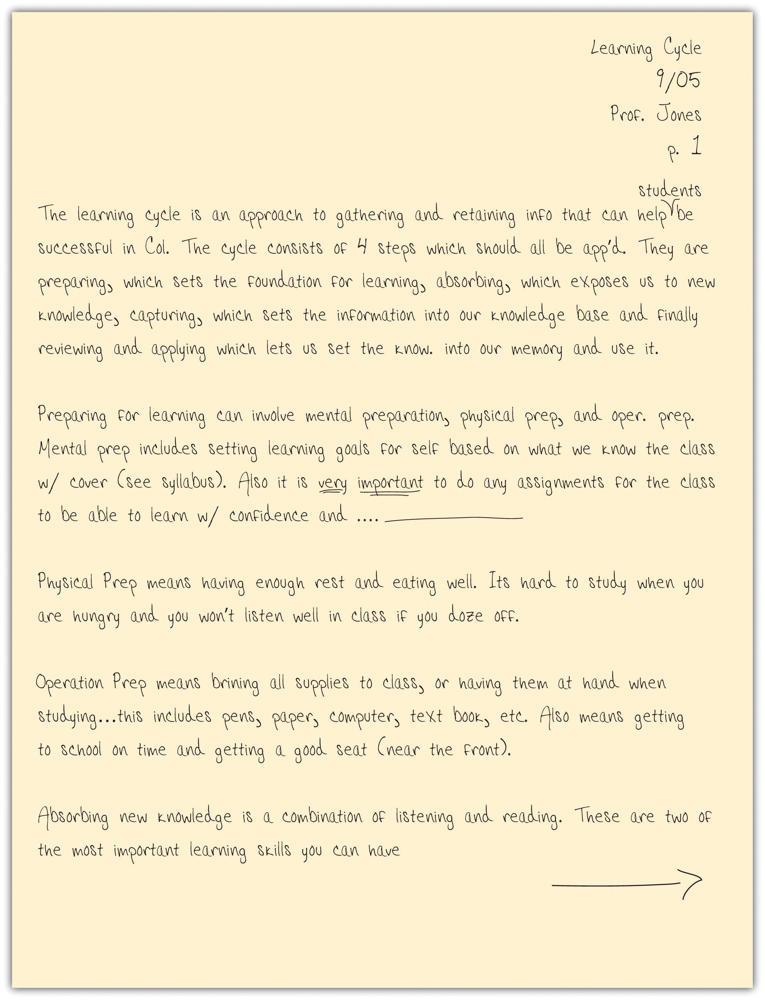
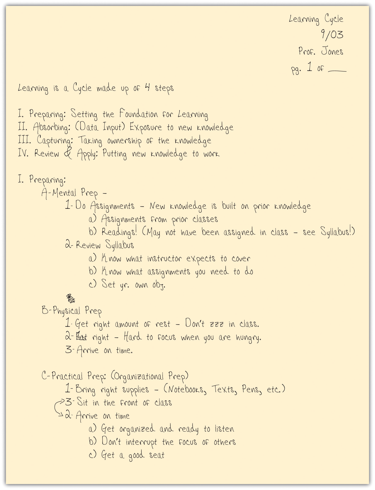
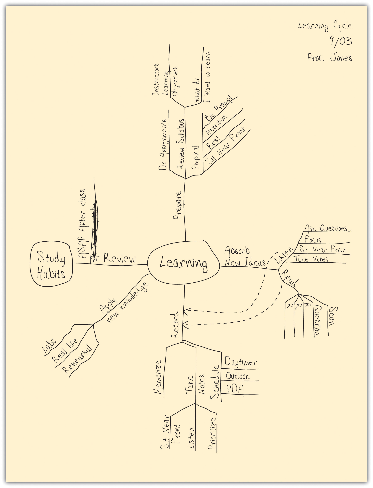
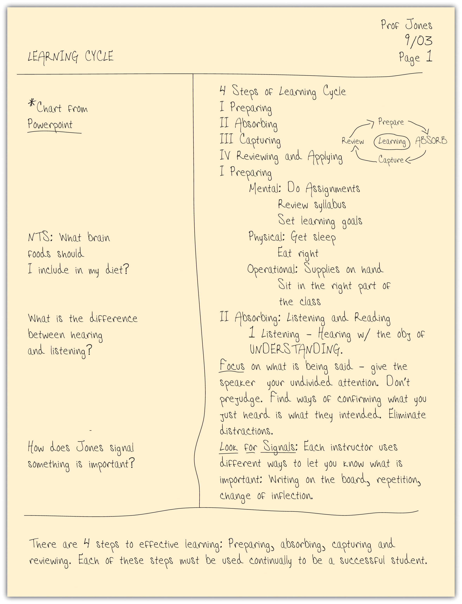

Everybody takes notes, or at least everybody claims to. But if you take a close look, many who are claiming to take notes on their laptops are actually surfing the Web, and paper notebooks are filled with doodles interrupted by a couple of random words with an asterisk next to them reminding you that “This is important!” In college, these approaches will not work. In college, your instructors expect you to make connections between class lectures and reading assignments; they expect you to create an opinion about the material presented; they expect you to make connections between the material and life beyond college. Your notes are your road maps for these thoughts. Do you take good notes? After learning to listen, note taking is the most important skill to ensure your success in a class.
Effective note taking is important because it
There are various forms of taking notes, and which one you choose depends on both your personal style and the instructor’s approach to the material. Each can be used in a notebook, index cards, or in a digital form on your laptop. No specific type is good for all students and all situations, so we recommend that you develop your own style, but you should also be ready to modify it to fit the needs of a specific class or instructor. To be effective, all of these methods require you to listen actively and to think; merely jotting down words the instructor is saying will be of little use to you.
Table 4.2 Note-Taking Methods
| Method | Description | When to Use |
|---|---|---|
| Lists | A sequential listing of ideas as they are presented. Lists may be short phrases or complete paragraphs describing ideas in more detail. | This method is what most students use as a fallback if they haven’t learned other methods. This method typically requires a lot of writing, and you may find that you are not keeping up with the professor. It is not easy for students to prioritize ideas in this method. |
| Outlines | The outline method places most important ideas along the left margin, which are numbered with roman numerals. Supporting ideas to these main concepts are indented and are noted with capital letters. Under each of these ideas, further detail can be added, designated with an Arabic number, a lowercase letter, and so forth. | A good method to use when material presented by the instructor is well organized. Easy to use when taking notes on your computer. |
| Concept Maps | When designing a concept map, place a central idea in the center of the page and then add lines and new circles in the page for new ideas. Use arrows and lines to connect the various ideas. | Great method to show relationships among ideas. Also good if the instructor tends to hop from one idea to another and back. |
| Cornell Method | The Cornell method uses a two-column approach. The left column takes up no more than a third of the page and is often referred to as the “cue” or “recall” column. The right column (about two-thirds of the page) is used for taking notes using any of the methods described above or a combination of them. After class or completing the reading, review your notes and write the key ideas and concepts or questions in the left column. You may also include a summary box at the bottom of the page, in which to write a summary of the class or reading in your own words. | The Cornell method can include any of the methods above and provides a useful format for calling out key concepts, prioritizing ideas, and organizing review work. Most colleges recommend using some form of the Cornell method. |
Figure 4.3 The List Method of Note Taking
The list method is usually not the best choice because it is focused exclusively on capturing as much of what the instructor says as possible, not on processing the information. Most students who have not learned effective study skills use this method, because it’s easy to think that this is what note taking is all about. Even if you are skilled in some form of shorthand, you should probably also learn one of the other methods described here, because they are all better at helping you process and remember the material. You may want to take notes in class using the list method, but transcribe your notes to an outline or concept map method after class as a part of your review process. It is always important to review your notes as soon as possible after class and write a summary of the class in your own words.
Figure 4.4 The Outline Method of Note Taking
The advantage of the outline method is that it allows you to prioritize the material. Key ideas are written to the left of the page, subordinate ideas are then indented, and details of the subordinate ideas can be indented further. To further organize your ideas, you can use the typical outlining numbering scheme (starting with roman numerals for key ideas, moving to capital letters on the first subordinate level, Arabic numbers for the next level, and lowercase letters following.) At first you may have trouble identifying when the instructor moves from one idea to another. This takes practice and experience with each instructor, so don’t give up! In the early stages you should use your syllabus to determine what key ideas the instructor plans to present. Your reading assignments before class can also give you guidance in identifying the key ideas.
If you’re using your laptop computer for taking notes, a basic word processing application (like Microsoft Word or Works) is very effective. Format your document by selecting the outline format from the format bullets menu. Use the increase or decrease indent buttons to navigate the level of importance you want to give each item. The software will take care of the numbering for you!
After class be sure to review your notes and then summarize the class in one or two short paragraphs using your own words. This summary will significantly affect your recall and will help you prepare for the next class.
Figure 4.5 The Concept Map Method of Note Taking
This is a very graphic method of note-taking that is especially good at capturing the relationships among ideas. Concept maps harness your visual sense to understand complex material “at a glance.” They also give you the flexibility to move from one idea to another and back easily (so they are helpful if your instructor moves freely through the material).
To develop a concept map, start by using your syllabus to rank the ideas you will listen to by level of detail (from high-level or abstract ideas to detailed facts). Select an overriding idea (high level or abstract) from the instructor’s lecture and place it in a circle in the middle of the page. Then create branches off that circle to record the more detailed information, creating additional limbs as you need them. Arrange the branches with others that interrelate closely. When a new high-level idea is presented, create a new circle with its own branches. Link together circles or concepts that are related. Use arrows and symbols to capture the relationship between the ideas. For example, an arrow may be used to illustrate cause or effect, a double-pointed arrow to illustrate dependence, or a dotted arrow to illustrate impact or effect.
As with all note-taking methods, you should summarize the chart in one or two paragraphs of your own words after class.
Figure 4.6 The Cornell Method of Note Taking
The Cornell methodA classic method of taking organized class notes using a two-column approach that highlights key ideas. was developed in the 1950s by Professor Walter Pauk at Cornell University. It is recommended by most colleges because of its usefulness and flexibility. This method is simple to use for capturing notes, is helpful for defining priorities, and is a very helpful study tool.
The Cornell method follows a very specific format that consists of four boxes: a header, two columns, and a footer.
The header is a small box across the top of the page. In it you write identification information like the course name and the date of the class. Underneath the header are two columns: a narrow one on the left (no more than one-third of the page) and a wide one on the right. The wide column, called the “notes” column, takes up most of the page and is used to capture your notes using any of the methods outlined earlier. The left column, known as the “cue” or “recall” column, is used to jot down main ideas, keywords, questions, clarifications, and other notes. It should be used both during the class and when reviewing your notes after class. Finally, use the box in the footer to write a summary of the class in your own words. This will help you make sense of your notes in the future and is a valuable tool to aid with recall and studying.
Some students like to use index cards to take notes. They actually lend themselves quite well to the Cornell method. Use the “back” or lined side of the card to write your notes in class. Use one card per key concept. The “front” unlined side of the card replaces the left hand “cue” column. Use it after class to write keywords, comments, or questions. When you study, the cards become flash cards with questions on one side and answers on the other. Write a summary of the class on a separate card and place it on the top of the deck as an introduction to what was covered in the class.
I used to tape my lecture classes so I could fill in my sketchy notes afterward. Now that I’m using the Cornell system, my notes are complete and organized in much less time. And my regular five-minute reviews make learning almost painless. No more taping and listening twice.
a student at Southern Methodist University
You will have noticed that all methods end with the same step: reviewing your notes as soon as possible after class. Any review of your notes is helpful (reading them, copying them into your computer, or even recasting them using another note-taking method). But THINK! Make your review of notes a thoughtful activity, not a mindless process. When you review your notes, think about questions you still have and determine how you will get the answers. (From the next class? Studying with a friend? Looking up material in your text or on the net?) Examine how the material applies to the course; make connections with notes from other class sessions, with material in your text, and with concepts covered in class discussions. Finally, it’s fun to think about how the material in your notes applies to real life. Consider this both at the very strategic level (as in “What does this material mean to me in relation to what I want to do with my life?”) as well as at a very mundane level (as in “Is there anything cool here I can work into a conversation with my friends?”).
Some instructors hand out or post their notes or their PowerPoint slides from their lectures. These handouts should never be considered a substitute for taking notes in class. They are a very useful complement and will help you confirm the accuracy of your notes, but they do not involve you in the process of learning as well as your own notes do. After class, review your notes with highlighter in hand and mark keywords and ideas in your notes. This will help you write the summary of the class in your own words.
Regardless of what note-taking method you choose, there are some note-taking habits you should get into for all circumstances and all courses:
Choose one of your classes where you normally take notes. Make a conscious effort to use the Cornell method with either the outline or concept map method for taking your notes. Follow as many steps listed previously as possible. Now compare these notes with those you took in the previous class. Are your new notes more useful? What did you like about taking notes this way? What are some of the things you need to work on improving? (Remember this will get much easier with more practice.) Write your thoughts here.
________________________________________________________________________________
________________________________________________________________________________
________________________________________________________________________________
________________________________________________________________________________
________________________________________________________________________________
________________________________________________________________________________
Clearly the best way to learn class material is to be at the class and to take your own notes. In college, regular attendance is expected. But life happens. On occasion, you may have to miss a class or lecture. When this happens, here are some strategies you can use to make up for it:
Class is over, and you have a beautiful set of notes in your spiral notebook or saved in your laptop. You have written the summary of the class in your own words. Now what?
Start by organizing your notes. We recommend you use a three-ring binder for each of your subjects. Print your notes if you used a computer. If you used note cards, insert them in plastic photo holders for binders. Group all notes from a class or unit together in a section; this includes class notes, reading notes, and instructor handouts. You might also want to copy the instructor’s syllabus for the unit on the first page of the section.
Next, spend some time linking the information across the various notes. Use the recall column in your notes to link to related information in other notes (e.g., “See class notes date/page”).
If you have had a quiz or test on the unit, add it to your binder, too, but be sure to write out the correct answer for any item you missed. Link those corrections to your notes, too.
Use this opportunity to write “notes on your notes.” Review your summary to see if it still is valid in light of your notes on the reading and any handouts you may have added to your notes package.
You don’t need to become a pack rat with your notes. It is fairly safe to toss them after the end of a course except in the following cases:
Name two advantages of the Cornell system over the list method of note taking.
__________________________________________________________________
__________________________________________________________________
Describe the benefits of—and potential problems with—taking class notes on a laptop.
__________________________________________________________________
__________________________________________________________________
__________________________________________________________________
__________________________________________________________________
List at least three ways to make up for missing notes because you miss a class.
__________________________________________________________________
__________________________________________________________________
__________________________________________________________________
__________________________________________________________________